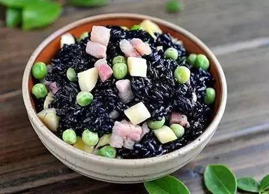

乌米饭

在广西梧州，吃乌米饭是“三月三”的传统习俗，乌米饭的口味分为咸、甜两种，有人说乌黑发亮的乌米饭有祛邪扶正，健身暖胃祛寒的功效，吃起来也是相当美味。
乌米饭原为民间食品，唐代即有。江苏宜兴、溧阳、金坛和皖南一带农村每乌米饭逢农历四月初八，多有人家用乌饭树叶煮乌米饭，已成习俗。在中国浙江、江苏、湖北、湖南、江西、四川、贵州、安徽等地，人们仍保留着农历四月吃乌米饭这一古老的习俗。有的地方在清明寒食节吃，而更多的则是在四月初八这天吃。乌米饭是花溪苗族、布依族独特的风味小吃。农历四月初八，布依族称为"牛王节"，也叫"开秧门"。四月初八一过，打田栽秧就开始。开秧门这一天吃了乌米饭，打田栽秧这段时间，身强体健、百病不生，因此家家户户都要吃香喷喷的乌米饭。乌米饭是一种紫黑色的糯米饭，是采集野生植物乌饭树的叶子煮汤，用所煮的汤将糯米浸泡半天，然后捞出放入木甑里蒸熟而成。乌米饭油亮清香，由糯米泡入乌树叶中几小时后煮成的。吃乌米饭可以祛风解毒，防蚊叮虫咬，而且人们相信在立夏这天吃乌米饭，孙膑就会护佑人们平安如意。